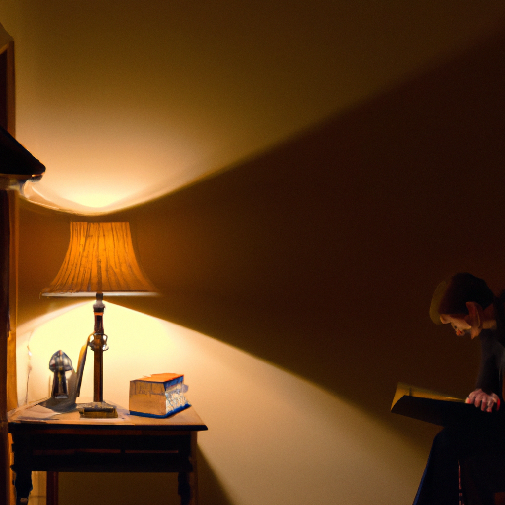

In the soft glow of my bedside lamp, every shadow seemed to stretch with intent. I had read countless tales of terror, yet the allure of a two-sentence horror story felt benign—like a playful whisper in the dark. I convinced myself that a few fleeting lines could not unsettle me, that the warmth of my study would shield me from any phantom that lurked between words. But on that night, something primal snapped.
I stumbled upon it on a forgotten corner of the web, a snippet no longer than a breath. The forum warned that those two lines had broken even the most stoic of readers, leaving them pale and trembling. Against my better judgment, I copied the text into a new document, feeling the keys grow heavy beneath my fingers. Each letter seemed to breathe against my skin. By the time I hit 'Save,' the room had shifted: the lamp’s flame flickered wildly, and the edges of the desk appeared to fray like charred paper. A soft thump echoed from the wall behind me.
When I followed the soft knock behind the wall, I found two hollow eyes staring back. Tonight, they tapped again, but this time from inside my skull.
As I read those words aloud, the air turned viscous. My breath came in shallow gusts, each exhale shimmering in the lamp’s glow like smoke. The walls pulsed with a damp, rotten texture—as if the plaster had become living flesh, throbbing with anticipation. A musty scent of earth and decay seeped from the cracks, and the floorboards moaned under an unseen weight. I pressed my palms against the desk, knuckles white, feeling the wood warp beneath my skin. Every hair on my arms stood on end as a low, resonant tapping began to echo inside my own skull, perfectly synchronized with my pounding heartbeat.
Yet amidst the terror, I found a strange comfort in the warmth of my surroundings. The amber light from the lamp felt like an embrace, softening the edges of the nightmare. I clasped my favorite mug—once filled with hot tea, now cold and trembling in my grip—and whispered reassurance to myself. The ancient wooden shelves, lined with stories of distant lands and forgotten gods, stood as silent guardians. Even as the tapping inside my head grew louder, I reminded myself that stories were just stories. My heart surged with defiance: fear could be felt, named, and—perhaps someday—mastered.
That belief shattered when the two sentences began to shift on the page. Ink bled into new letters, forming words I had never written. A tremor ran up my spine as I leaned closer, the lamp’s glow illuminating a message that wasn’t there moments before: They are already inside. My reflection quivered in the window—a pale face contorted by dread, eyes wide and unblinking. Behind that image, something darker drifted just out of sight, a shape woven from the space between words. I tried to scream but found only silence. In the end, the story claimed me: the two sentences had become a door, and I had walked through it without ever meaning to.
